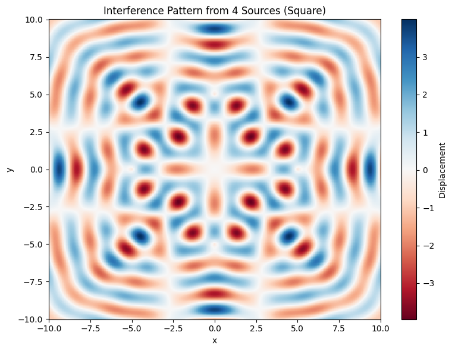

Problem 1
Wave Interference on a Water Surface: Analysis Using Regular Polygonal Source Configurations
1. Introduction
Waves are a fundamental concept in physics, governing the behavior of a wide range of natural and technological phenomena. Whether it's ripples on a pond, the transmission of sound through air, the propagation of light through space, or even the probabilistic behavior of particles in quantum mechanics, the wave model provides an essential framework for understanding how energy and information move through space and time.
A central characteristic of wave behavior is interference, which occurs when two or more waves meet and interact. The outcome of this interaction depends on their relative amplitudes and phases: if the wave crests align (in phase), the result is constructive interference, amplifying the wave. If a crest meets a trough (out of phase), destructive interference occurs, potentially canceling the wave out entirely.
Visualizing interference on a water surface is particularly effective for understanding these concepts. It offers a tangible, intuitive way to grasp how wave interactions form structured patterns. In this project, we simulate water surface waves emanating from multiple point sources arranged symmetrically at the vertices of a regular polygon. This arrangement allows for high symmetry and offers a clean model for exploring the interplay of wave propagation, phase alignment, and geometry.
By analyzing these interference patterns, we can build a deeper conceptual understanding of wave mechanics and draw parallels to more complex systems in acoustics, optics, fluid dynamics, and quantum physics.
2. Motivation
The motivation behind this project stems from the importance of wave interference across multiple scientific disciplines. Interference is not just a curiosity—it is a central phenomenon underlying key principles and applications in both theoretical and applied physics.
Visualizing wave interactions in real time allows us to:
- Grasp how multiple waves combine spatially and temporally.
- Explore the influence of geometry, symmetry, and coherence on resulting waveforms.
- Develop intuition about wave behavior before progressing to more abstract or higher-dimensional cases (such as electromagnetic fields or wavefunctions in quantum systems).
Regular polygons, such as triangles, squares, and pentagons, offer a mathematically controlled setup where the influence of each source can be symmetrically balanced. This symmetry is not just aesthetic—it simplifies the analysis and highlights the intrinsic properties of wave interaction that are otherwise hidden in irregular setups.
Moreover, water surface wave simulations serve as an accessible analog for more complex systems like:
- Sound waves in acoustics (e.g., speaker arrays, room resonance),
- Electromagnetic waves in antenna design and optical interference,
- Quantum wavefunctions in particle interference experiments,
- Oceanography and fluid simulations where multiple wave systems interact nonlinearly.
Thus, this project not only visualizes basic physical phenomena but also acts as a bridge to understanding deeper, more advanced wave behaviors in other domains.
3. Theoretical Background
Understanding wave interference requires a solid grasp of the physics of wave propagation, particularly when multiple sources are involved.
3.1 Single Point Source Wave Equation
A point source emitting circular waves on a 2D water surface can be modeled by the following wave equation:
Where:
- \( u(\vec{r}, t) \): Vertical displacement of the water surface at position \( \vec{r} \) and time \( t \),
- \( A \): Wave amplitude (assumed constant across sources),
- \( k = \frac{2\pi}{\lambda} \): Wave number, where \( \lambda \) is the wavelength,
- \( \omega = 2\pi f \): Angular frequency, where \( f \) is the temporal frequency,
- \( \vec{r}_i \): Position vector of the point source,
- \( \phi \): Initial phase (set to zero in this case for all sources),
- \( \lVert \vec{r} - \vec{r}_i \rVert \): Distance between observation point and the source.
3.2 Superposition of Waves
For multiple point sources placed at positions \( \vec{r}_1, \vec{r}_2, \dots, \vec{r}_N \), the total wave displacement at a point \( \vec{r} \) and time \( t \) is given by the superposition principle:
The interference pattern that emerges from this sum depends critically on the geometry (i.e., where the sources are placed), the wavelength, and the coherence of the sources. These patterns can contain regularly spaced regions of constructive interference (high amplitude) and destructive interference (zero amplitude), forming a complex and dynamic visual structure.
Generalized Wave Superposition with Phase Differences
Each source \( i \) may have its own amplitude \( A_i \) and initial phase \( \phi_i \). This generalized form is essential for studying wave arrays with non-identical or phase-shifted sources.
4. Simulation Design
To investigate interference patterns computationally, a numerical simulation is constructed with the following design.
Show Python Code
import numpy as np
import matplotlib.pyplot as plt
# Wave parameters
A = 1.0 # Amplitude of each wave
wavelength = 2.0 # Wavelength
frequency = 1.0 # Frequency (Hz)
omega = 2 * np.pi * frequency # Angular frequency
k = 2 * np.pi / wavelength # Wave number
phi = 0 # Initial phase
t = 0 # Time snapshot (static visualization)
# Positioning wave sources at the vertices of a square
n_sources = 4
radius = 5
angles = np.linspace(0, 2 * np.pi, n_sources, endpoint=False)
source_positions = np.array([
[radius * np.cos(angle), radius * np.sin(angle)] for angle in angles
])
# Create a 2D grid of observation points
x = np.linspace(-10, 10, 400)
y = np.linspace(-10, 10, 400)
X, Y = np.meshgrid(x, y)
# Calculate total wave displacement by superposition of sources
Z = np.zeros_like(X)
for sx, sy in source_positions:
r = np.sqrt((X - sx)**2 + (Y - sy)**2)
Z += A * np.sin(k * r - omega * t + phi)
# Plot the interference pattern
fig, ax = plt.subplots(figsize=(8, 6))
c = ax.pcolormesh(X, Y, Z, shading='auto', cmap='RdBu')
ax.set_title("Interference Pattern from 4 Sources (Square)")
ax.set_xlabel("x")
ax.set_ylabel("y")
fig.colorbar(c, ax=ax, label='Displacement')
plt.tight_layout()
plt.show()

4.1 Configuration of Wave Sources
- We choose a square as the base geometry, consisting of 4 equidistant point sources arranged on a circle of radius \( R = 5 \) centered at the origin.
- The position of each source \( \vec{r}_i \) is calculated using polar coordinates:
4.2 Parameter Table
| Parameter | Value | Description |
|---|---|---|
| Amplitude \( A \) | 1.0 | Constant amplitude across all sources |
| Wavelength \( \lambda \) | 2.0 | Determines the spatial period of the waves |
| Frequency \( f \) | 1.0 Hz | Temporal frequency of the wave oscillation |
| Polygon Type | Square (N = 4) | 4 coherent sources arranged symmetrically |
| Radius \( R \) | 5 units | Distance from center to each source |
| Grid Range | x, y ∈ [−10, 10] | Defines the simulation domain in 2D space |
| Resolution | 400 × 400 | Number of evaluation points per axis |
| Time Snapshot | \( t = 0 \) | Fixed time for static interference pattern |
4.3 Computational Grid
A 2D spatial grid is defined across the x-y plane. For each point on this grid, the total displacement is calculated by summing the wave contributions from each source. The result is a scalar field representing the water surface displacement, which is then visualized using a pseudocolor plot to highlight variations in amplitude.
5. Simulation Results and Interpretation
The simulation outputs a vivid, high-resolution 2D map of the water surface at a specific time.
5.1 Visual Features of the Interference Pattern
- Symmetry: The interference pattern exhibits fourfold symmetry, as expected from the square arrangement of sources.
- Fringes: Regularly spaced high and low displacement regions form concentric and intersecting wavefronts.
- Nodes and Antinodes: Regions of destructive interference (nodes) appear where the wave contributions cancel out. These are interspersed with antinodal regions (constructive interference) where amplitudes reinforce.
The 3D surface plot below provides a spatial visualization of these features, helping to intuitively observe the variation in displacement across the surface:
Show Python Code
import numpy as np
import matplotlib.pyplot as plt
from mpl_toolkits.mplot3d import Axes3D
# Parameters
A = 1.0
wavelength = 2.0
frequency = 1.0
omega = 2 * np.pi * frequency
k = 2 * np.pi / wavelength
phi = 0
t = 0
radius = 5
resolution = 400
# 2D Grid
x = np.linspace(-10, 10, resolution)
y = np.linspace(-10, 10, resolution)
X, Y = np.meshgrid(x, y)
# Square Configuration (4 Sources)
n_sources = 4
angles = np.linspace(0, 2 * np.pi, n_sources, endpoint=False)
source_positions = np.array([
[radius * np.cos(angle), radius * np.sin(angle)] for angle in angles
])
# Calculate Superposition
Z = np.zeros_like(X)
for sx, sy in source_positions:
r = np.sqrt((X - sx)**2 + (Y - sy)**2)
Z += A * np.sin(k * r - omega * t + phi)
# 3D Surface Plot
fig = plt.figure(figsize=(8, 6))
ax = fig.add_subplot(111, projection='3d')
ax.plot_surface(X, Y, Z, cmap='RdBu', edgecolor='none', antialiased=True)
ax.view_init(elev=45, azim=135)
ax.set_title("3D Surface Plot – Square Configuration")
ax.set_xlabel("x")
ax.set_ylabel("y")
ax.set_zlabel("Displacement")
plt.tight_layout()
plt.show()
5.2 Dynamic Nature
Although only a single time snapshot is shown, the pattern is inherently time-dependent. As time progresses, the crests and troughs propagate outward, shift, and evolve, producing a dynamic wave field. Time-evolving animations can reveal even more intricate details of interference behavior.
5.3 Cross-Sectional Analysis of the Interference Pattern
To complement the two- and three-dimensional representations, a one-dimensional cross-sectional analysis was performed along the x-axis at y = 0. This allows us to visualize the variation in displacement across a linear path and to better understand the spatial periodicity of the interference pattern.
The following plot displays the displacement as a function of x, revealing clear peaks and nodes that correspond to constructive and destructive interference:
Show Python Code
import numpy as np
import matplotlib.pyplot as plt
# Parameters
A = 1.0
wavelength = 2.0
frequency = 1.0
omega = 2 * np.pi * frequency
k = 2 * np.pi / wavelength
phi = 0
t = 0
radius = 5
resolution = 400
x = np.linspace(-10, 10, resolution)
y = np.linspace(-10, 10, resolution)
X, Y = np.meshgrid(x, y)
# Square configuration (4 sources)
n_sources = 4
angles = np.linspace(0, 2 * np.pi, n_sources, endpoint=False)
source_positions = np.array([
[radius * np.cos(angle), radius * np.sin(angle)] for angle in angles
])
Z = np.zeros_like(X)
for sx, sy in source_positions:
r = np.sqrt((X - sx)**2 + (Y - sy)**2)
Z += A * np.sin(k * r - omega * t + phi)
# Cross-section at y = 0
center_index = resolution // 2
Z_line = Z[center_index, :]
# Line plot
fig, ax = plt.subplots(figsize=(8, 4))
ax.plot(x, Z_line, color='black')
ax.set_title("Cross-Section Along x-axis (y = 0) – Square Configuration")
ax.set_xlabel("x")
ax.set_ylabel("Displacement")
plt.tight_layout()
plt.show()
The above graph shows the displacement variation along the x-axis (y = 0). The alternating peaks and valleys clearly illustrate the underlying structure of wave interference, highlighting the regions of constructive and destructive superposition.
Cross-Sectional Displacement Function (at \( y = 0 \))
This equation represents the total displacement along the x-axis where \( y = 0 \), combining contributions from all source points located at \((x_i, y_i)\).
5.4 Irregular Source Configuration and Enhanced Visualization
Unlike the previous patterns generated by sources placed at the vertices of regular polygons, this plot explores the interference resulting from three sources arranged in an irregular triangle. The lack of symmetry leads to a more chaotic and less predictable distribution of constructive and destructive interference.
A smooth, vibrant colormap was used to emphasize the spatial variation in wave displacement, making the nodal (destructive) and antinodal (constructive) regions more visually accessible.
Show Python Code
import numpy as np
import matplotlib.pyplot as plt
# Grid setup
A = 1.0
wavelength = 2.0
frequency = 1.0
omega = 2 * np.pi * frequency
k = 2 * np.pi / wavelength
phi = 0
t = 0
radius = 5
resolution = 400
x = np.linspace(-10, 10, resolution)
y = np.linspace(-10, 10, resolution)
X, Y = np.meshgrid(x, y)
# Irregular triangle source coordinates
sources = np.array([
[-4, -3],
[3.5, -2],
[0, 5]
])
# Compute wave field
Z = np.zeros_like(X)
for sx, sy in sources:
r = np.sqrt((X - sx)**2 + (Y - sy)**2)
Z += A * np.sin(k * r - omega * t + phi)
# Plot interference pattern
fig, ax = plt.subplots(figsize=(7, 6))
contour = ax.contourf(X, Y, Z, levels=60, cmap='Spectral') # Enhanced color
fig.colorbar(contour, ax=ax, label='Displacement')
# Plot source points
for i, (sx, sy) in enumerate(sources):
ax.plot(sx, sy, marker='o', color='black', markersize=8,
markerfacecolor='none', markeredgewidth=1.5, label=f"Source {i+1}")
# Style adjustments
ax.set_title("Interference Pattern – Three Irregular Sources (Enhanced Color)", fontsize=13)
ax.set_xlabel("x", fontsize=11)
ax.set_ylabel("y", fontsize=11)
ax.legend(frameon=False)
ax.set_aspect('equal')
ax.grid(False)
plt.tight_layout()
plt.show()
The above graph illustrates the interference field of three irregularly placed sources, using an enhanced color scheme to highlight the distribution of constructive and destructive interference.
5.5 Comparison of Interference Patterns from Polygonal Source Configurations
The figure below compares the wave interference patterns produced by placing sources at the vertices of regular polygons. As the number of sources increases, the symmetry and complexity of the resulting wave fields become more pronounced. While triangular and square configurations show clearly defined central fringes, pentagonal and hexagonal setups result in denser and more intricate interference structures.
Show Python Code – Polygonal Configuration Comparison
import numpy as np
import matplotlib.pyplot as plt
# Parameters
A = 1.0
wavelength = 2.0
frequency = 1.0
omega = 2 * np.pi * frequency
k = 2 * np.pi / wavelength
phi = 0
t = 0
radius = 5
resolution = 400
# Create grid
x = np.linspace(-10, 10, resolution)
y = np.linspace(-10, 10, resolution)
X, Y = np.meshgrid(x, y)
# Define polygon configurations
polygon_configs = {
"Triangle (3 Sources)": 3,
"Square (4 Sources)": 4,
"Pentagon (5 Sources)": 5,
"Hexagon (6 Sources)": 6
}
fig, axs = plt.subplots(2, 2, figsize=(12, 10), constrained_layout=True)
axs = axs.flatten()
for i, (title, sides) in enumerate(polygon_configs.items()):
angles = np.linspace(0, 2 * np.pi, sides, endpoint=False)
source_positions = np.array([
[radius * np.cos(angle), radius * np.sin(angle)] for angle in angles
])
Z = np.zeros_like(X)
for sx, sy in source_positions:
r = np.sqrt((X - sx)**2 + (Y - sy)**2)
Z += A * np.sin(k * r - omega * t + phi)
pcm = axs[i].pcolormesh(X, Y, Z, shading='auto', cmap='RdBu', vmin=-4, vmax=4)
axs[i].set_title(title)
axs[i].set_xlabel("x")
axs[i].set_ylabel("y")
axs[i].set_aspect('equal')
axs[i].grid(False)
# Shared colorbar and main title
fig.colorbar(pcm, ax=axs, orientation='vertical', shrink=0.7, pad=0.02, label='Displacement')
fig.suptitle("Comparison of Interference Patterns by Polygonal Source Configuration", fontsize=16)
plt.show()
the above figure presents a comparative visualization of interference patterns for triangle, square, pentagon, and hexagon source arrangements.
5.6 Polar Visualization of Wave Interference
To gain a more spatially complete view of wave propagation and interference patterns, a polar-coordinate heatmap was constructed. This plot shows the wave displacement as a function of both radial distance and angular position, highlighting the symmetry and intensity variations in the wave field generated by square-arranged sources.
The polar heatmap reveals structured lobes and interference fringes that propagate outward from the center, with the radial structure reflecting the underlying source geometry.
Show Python Code
import numpy as np
import matplotlib.pyplot as plt
# Parameters
A = 1.0
wavelength = 2.0
frequency = 1.0
omega = 2 * np.pi * frequency
k = 2 * np.pi / wavelength
phi = 0
t = 0
radius = 5
# Polar grid (r and θ)
r_values = np.linspace(0.1, 10, 400)
theta_values = np.linspace(0, 2 * np.pi, 400)
R, Theta = np.meshgrid(r_values, theta_values)
# Convert to Cartesian for distance calculations
X_polar = R * np.cos(Theta)
Y_polar = R * np.sin(Theta)
# Square configuration: 4 sources
n_sources = 4
source_positions = np.array([
[radius * np.cos(a), radius * np.sin(a)]
for a in np.linspace(0, 2 * np.pi, n_sources, endpoint=False)
])
# Calculate total displacement on polar grid
Z_polar = np.zeros_like(X_polar)
for sx, sy in source_positions:
r = np.sqrt((X_polar - sx)**2 + (Y_polar - sy)**2)
Z_polar += A * np.sin(k * r - phi)
# Plot as polar heatmap
fig, ax = plt.subplots(subplot_kw={'projection': 'polar'}, figsize=(8, 7))
c = ax.pcolormesh(Theta, R, Z_polar, cmap='viridis', shading='auto')
fig.colorbar(c, ax=ax, pad=0.1, label='Wave Displacement')
ax.set_title("Polar Heatmap of Wave Interference – Square Configuration", fontsize=14, pad=20)
ax.set_rticks([2, 4, 6, 8, 10])
ax.grid(True)
plt.tight_layout()
plt.show()
The figure displays a polar colormap of displacement for square-configured sources. Both radial and angular characteristics of the wave field are visible.
5.7 Space-Time Displacement Pattern Along the x-axis
Instead of viewing the wave field as a series of static frames, this space-time plot illustrates how displacement evolves over time at each position along the x-axis (y = 0). The horizontal axis represents position, while the vertical axis shows time. The wave crests and troughs shift over time, forming diagonal patterns that indicate wave propagation speed and direction.
Show Python Code
import numpy as np
import matplotlib.pyplot as plt
# Wave parameters
A = 1.0
wavelength = 2.0
frequency = 1.0
omega = 2 * np.pi * frequency
k = 2 * np.pi / wavelength
phi = 0
radius = 5
resolution = 400
# Grid for x and time
x_line = np.linspace(-10, 10, resolution)
time_steps = np.linspace(0, 3, 300)
Z_xt = np.zeros((len(time_steps), len(x_line)))
# Define square source positions
n_sources = 4
source_positions = np.array([
[radius * np.cos(a), radius * np.sin(a)]
for a in np.linspace(0, 2 * np.pi, n_sources, endpoint=False)
])
# Compute displacement over time at y = 0
for i, t_val in enumerate(time_steps):
Z_row = np.zeros_like(x_line)
for sx, sy in source_positions:
r = np.sqrt((x_line - sx)**2 + (0 - sy)**2)
Z_row += A * np.sin(k * r - omega * t_val + phi)
Z_xt[i] = Z_row
# Plot space-time diagram
fig, ax = plt.subplots(figsize=(10, 5))
c = ax.pcolormesh(x_line, time_steps, Z_xt, shading='auto', cmap='seismic', vmin=-4, vmax=4)
fig.colorbar(c, ax=ax, label='Displacement')
ax.set_title("Space-Time Displacement Pattern Along x-axis (y = 0)")
ax.set_xlabel("x (position)")
ax.set_ylabel("Time (s)")
plt.tight_layout()
plt.show()
The figure shows a color-mapped view of wave displacement as it varies with both time and space along the x-axis. Diagonal wavefronts represent the movement of interference peaks through the field.
6. Physical Significance and Real-World Applications
Time-dependent wave interference is more than a theoretical curiosity—it has critical implications in various branches of science and engineering. This simulation reflects principles at the core of numerous real-world technologies and experiments.
6.1 Electromagnetic Wave Applications
- Antenna Array Design: The spatial arrangement and phase coherence of multiple antennas determine signal strength and direction via constructive and destructive interference.
- Optical Interference: Devices like interferometers depend on wave superposition to detect minute changes in distance or refractive index (e.g., LIGO’s detection of gravitational waves).
- Fiber Optics: Wave interference within fiber channels can enhance or degrade signal fidelity depending on the alignment of light paths.
To better visualize how energy propagates in a coherent wave field, the gradient of the displacement was computed. This yields a streamplot representing the directional flow of wave energy, similar to how electromagnetic energy is steered in phased-array systems.
Show Python Code
import numpy as np
import matplotlib.pyplot as plt
# Wave parameters
A = 1.0
wavelength = 2.0
k = 2 * np.pi / wavelength
phi = 0
radius = 5
resolution = 400
# Create grid
x = np.linspace(-10, 10, resolution)
y = np.linspace(-10, 10, resolution)
X, Y = np.meshgrid(x, y)
# Define square configuration (4 sources at polygon corners)
n_sources = 4
source_positions = np.array([
[radius * np.cos(a), radius * np.sin(a)]
for a in np.linspace(0, 2 * np.pi, n_sources, endpoint=False)
])
# Displacement field at t = 0
Z = np.zeros_like(X)
for sx, sy in source_positions:
r = np.sqrt((X - sx)**2 + (Y - sy)**2)
Z += A * np.sin(k * r + phi)
# Compute gradients (∇u)
grad_y, grad_x = np.gradient(Z)
# Plot streamlines (vector field)
fig, ax = plt.subplots(figsize=(6, 5))
ax.streamplot(X, Y, grad_x, grad_y, color=np.sqrt(grad_x**2 + grad_y**2), cmap='plasma', density=1.5)
ax.set_title("Energy Flow Vector Field – Square Configuration")
ax.set_xlabel("x")
ax.set_ylabel("y")
ax.set_aspect('equal')
plt.tight_layout()
plt.show()
Figure: Streamplot showing the spatial gradient (∇u) of the displacement field. The vectors indicate local directions of wave energy propagation in a square source configuration.
6.2 Acoustics and Sound Engineering
- Room Acoustics: Reflected sound waves create standing wave patterns; understanding interference is essential for designing auditoriums and concert halls.
- Loudspeaker Arrays: Speaker placement and phasing rely on constructive interference to deliver consistent sound coverage.
- Musical Tones: Overtones and harmonics in musical instruments emerge from wave interference within the vibrating medium. To visualize how standing waves form in acoustic spaces, the figure below simulates the third harmonic room mode in a closed rectangular environment. The wave pattern is stationary and displays clear nodes and antinodes, where destructive and constructive interference occur, respectively.
Such modal behavior is fundamental in understanding resonance in concert halls, studios, and even in musical instruments like strings and wind pipes.
Show Python Code
import numpy as np
import matplotlib.pyplot as plt
# Room parameters
room_length = 10 # meters
x = np.linspace(0, room_length, 500)
n_mode = 3 # Third harmonic
# Physical constants (for realism)
c = 343 # speed of sound in air (m/s)
f = n_mode * c / (2 * room_length)
omega = 2 * np.pi * f
k = omega / c
A = 1.0 # amplitude
# Standing wave function at t=0
u = A * np.sin(n_mode * np.pi * x / room_length)
# Plot
fig, ax = plt.subplots(figsize=(10, 3))
ax.plot(x, u, label=f"Mode {n_mode} (3rd Harmonic)", color='orange', linewidth=2)
ax.axhline(0, color='gray', linestyle='--', linewidth=1)
ax.set_title("Standing Wave Pattern – Room Mode (3rd Harmonic)")
ax.set_xlabel("Room Length (x)")
ax.set_ylabel("Displacement Amplitude")
ax.grid(True)
ax.legend()
plt.tight_layout()
plt.show()
 The above figure shows the third harmonic standing wave pattern along the length of a room. The wave displays two nodes and three antinodes, corresponding to a stationary resonance condition often observed in musical instruments and enclosed spaces.
The above figure shows the third harmonic standing wave pattern along the length of a room. The wave displays two nodes and three antinodes, corresponding to a stationary resonance condition often observed in musical instruments and enclosed spaces.
Standing Wave Equation
This is the standard form of a standing wave, resulting from the superposition of two waves traveling in opposite directions. Nodes occur where \( \sin(kx) = 0 \), and antinodes where \( \sin(kx) = \pm 1 \).
6.3 Quantum Physics
- Electron Interference: The famous double-slit experiment proves that electrons behave as probability waves, forming interference patterns.
- Wavefunction Overlap: In quantum systems, constructive and destructive interference of wavefunctions leads to observable quantum behaviors (e.g., tunneling, bonding in molecules).
Show Python Code
import numpy as np
import matplotlib.pyplot as plt
# Parameters
wavelength = 1.0
k = 2 * np.pi / wavelength
slit_distance = 4.0
slit_separation = slit_distance / 2
screen_distance = 15
resolution = 600
# Grid
x = np.linspace(-10, 10, resolution)
y = np.linspace(0, 20, resolution)
X, Y = np.meshgrid(x, y)
# Two slit positions
slit1 = (-slit_separation, 0)
slit2 = (slit_separation, 0)
# Distances from slits to each point
r1 = np.sqrt((X - slit1[0])**2 + (Y - slit1[1])**2)
r2 = np.sqrt((X - slit2[0])**2 + (Y - slit2[1])**2)
# Wavefunction (cosine-based) and total interference
psi = np.cos(k * r1) + np.cos(k * r2)
# Probability density
intensity = psi**2
# Plot
fig, ax = plt.subplots(figsize=(7.5, 6))
im = ax.imshow(intensity, extent=(-10, 10, 0, 20), origin='lower', cmap='inferno')
fig.colorbar(im, ax=ax, label='Probability Density')
ax.set_title("Double-Slit Interference Pattern – Quantum Analogy")
ax.set_xlabel("Screen Axis (x)")
ax.set_ylabel("Propagation Distance (y)")
plt.tight_layout()
plt.show()
The above figure simulates a quantum double-slit experiment. The resulting interference pattern represents the probability distribution of a particle's position, formed by the superposition of two coherent wavefunctions — a core principle of quantum mechanics.
Probability Density in the Double-Slit Experiment
This expression describes the probability of detecting a particle at position \( x \), derived from the coherent superposition of wavefunctions from two slits.
6.4 Fluid and Ocean Dynamics
- Coastal Engineering: Wave interference is crucial in understanding tidal patterns and designing breakwaters.
- Wave Tanks: Laboratory experiments in fluid mechanics often mimic the superposition of wave sources to study fluid surface behavior.
Show Python Code
import numpy as np
import matplotlib.pyplot as plt
# Parameters
A = 1.0
wavelength = 2.0
k = 2 * np.pi / wavelength
phi = 0
resolution = 500
# Grid setup
x = np.linspace(-10, 10, resolution)
y = np.linspace(-5, 5, resolution)
X, Y = np.meshgrid(x, y)
# Two symmetrical wave sources
source1 = (-3, -2)
source2 = (3, -2)
# Wave interference from both sources
r1 = np.sqrt((X - source1[0])**2 + (Y - source1[1])**2)
r2 = np.sqrt((X - source2[0])**2 + (Y - source2[1])**2)
Z = A * np.sin(k * r1 + phi) + A * np.sin(k * r2 + phi)
# Plot
fig, ax = plt.subplots(figsize=(9, 4.5))
im = ax.pcolormesh(X, Y, Z, shading='auto', cmap='coolwarm')
fig.colorbar(im, ax=ax, label='Surface Elevation (Relative)')
ax.set_title("Wave Interference Pattern in a Simplified Wave Tank Setup")
ax.set_xlabel("x (tank length)")
ax.set_ylabel("y (tank width)")
ax.set_aspect('equal')
plt.tight_layout()
plt.show()
The above figure illustrates the interference pattern created by two wave sources in a simplified wave tank environment. This setup is often used to analyze fluid surface interactions and resonance effects in coastal engineering experiments.
Water Surface Interference Model
The function \( \eta(\vec{r}, t) \) represents the vertical elevation of the water surface due to the interference of multiple coherent wave sources.
7. Conclusion
Through this simulation-based study, we explored the fundamental nature of wave interference by modeling multiple coherent sources arranged at the vertices of a square. The resulting interference patterns display rich spatial structure, driven by the symmetry of the source configuration and the fundamental properties of wave propagation.
Key Insights:
- The geometry of source placement critically determines the symmetry and periodicity of interference patterns.
- Regular polygon configurations produce structured, predictable wave interactions.
- The results apply not only to fluid surfaces but also to other physical systems governed by wave equations.